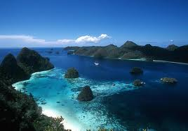

Bromo Mountain
Gunung Bromo terletak di provinsi Jawa Timur. Gunung Bromo memiliki pemandangan yang sangat indah. Gunung berapi aktif ini sangat diminati oleh pendaki untuk melakukan pendakian.
 Raja Ampat Island
Raja Ampat adalah sebuah tempat yang sangat indah. Kepulauan ini memiliki wisata air yang sangat indah. Raja Ampat saat ini menjadi destinasi pariwisata yang sangat di gemari. Kepulauan Raja Ampat ini terletak di pulau papua di Timur Indonesia.
Borobudur Temple
Candi Borobudur terletak di daerah kabupaten Magelang, Jawa Tengah. candi Borobudur ini merupakan salah satu peninggalan sejarah peradapan Indonesia. Warisan kerajaan budha ini merupakan salah satu keajaiban Dunia yang ditetapkan oleh UNESCO.